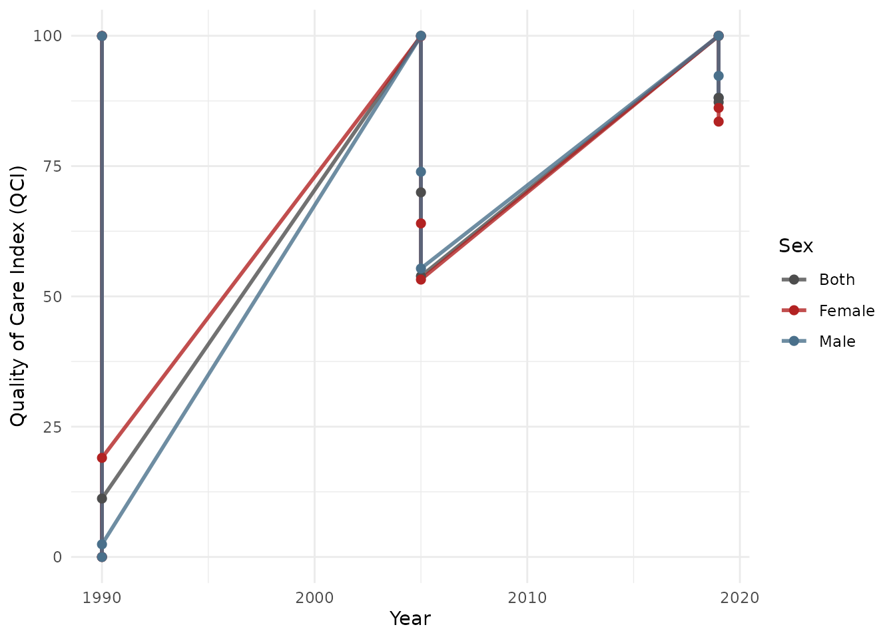
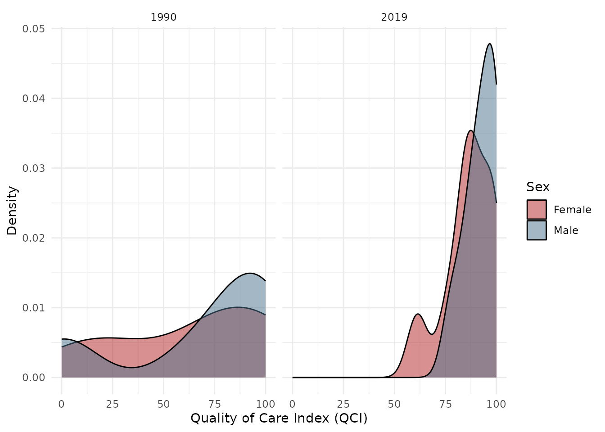

What is the Quality of Care Index (QCI)?
The Quality of Care Index (QCI) is a composite metric derived from Global Burden of Disease (GBD) study data. It uses Principal Component Analysis (PCA) on four epidemiological ratios to produce a single score (0-100) for each country, year, and sex combination. Higher scores indicate better quality of care.
The four component ratios are:
- MIR: Mortality-to-Incidence Ratio (Deaths / Incidence)
- YLLtoYLD: Years of Life Lost to Years Lived with Disability ratio
- DALtoPER: DALY-to-Prevalence Ratio
- PERtoINC: Prevalence-to-Incidence Ratio
Quick Start
Loading Sample Data
The package includes sample GBD data for demonstration:
data(sample_gbd)
head(sample_gbd[, c("location_name", "measure_name", "metric_name", "year", "val")])
#> location_name measure_name metric_name year val
#> 1 Japan YLDs (Years Lived with Disability) Rate 1990 2.674029
#> 2 Japan YLDs (Years Lived with Disability) Rate 1990 2.779096
#> 3 Japan YLDs (Years Lived with Disability) Rate 1990 2.723352
#> 4 China YLDs (Years Lived with Disability) Rate 1990 3.612208
#> 5 China YLDs (Years Lived with Disability) Rate 1990 4.225407
#> 6 China YLDs (Years Lived with Disability) Rate 1990 3.910120Running the Pipeline
The qci_pipeline() function runs the entire analysis in
one call:
result <- qci_pipeline(sample_gbd, verbose = FALSE)
#> ✔ Cleaned data: 9 locations, 3 years.
#> ℹ PCA done for "Both / Age-standardized": 74.1% variance explained (n=27).
#> ℹ PCA done for "Female / Age-standardized": 75.7% variance explained (n=27).
#> ℹ PCA done for "Male / Age-standardized": 73.2% variance explained (n=27).The result is a list with three elements:
names(result)
#> [1] "wide" "long" "pca_details"Examining Results
Wide format - one row per location/year/sex:
result$wide[, .(location_name, year, sex_name, qci_score)] |>
head(10)
#> Key: <location_name, year, sex_name>
#> location_name year sex_name qci_score
#> <char> <int> <char> <num>
#> 1: Australia 1990 Both 99.96851
#> 2: Australia 1990 Female 99.96648
#> 3: Australia 1990 Male 99.94012
#> 4: Australia 2005 Both 100.00000
#> 5: Australia 2005 Female 99.91433
#> 6: Australia 2005 Male 99.97438
#> 7: Australia 2019 Both 99.98164
#> 8: Australia 2019 Female 100.00000
#> 9: Australia 2019 Male 100.00000
#> 10: Brazil 1990 Both 0.00000PCA details - variance explained by the first principal component:
result$pca_details
#> sex_name age_name variance_explained_pc1 eigenvalue_pc1
#> 1 Both Age-standardized 74.05598 2.962239
#> 2 Female Age-standardized 75.66964 3.026785
#> 3 Male Age-standardized 73.20481 2.928192
#> n_observations
#> 1 27
#> 2 27
#> 3 27Gender Disparity Ratio
Compute the GDR (Female QCI / Male QCI):
gdr <- qci_gdr(result$wide)
head(gdr[, .(location_name, year, qci_female, qci_male, gdr, gdr_category)])
#> location_name year qci_female qci_male gdr gdr_category
#> <char> <int> <num> <num> <num> <char>
#> 1: China 1990 19.01955 2.425957 7.8400189 high
#> 2: China 2005 53.22120 55.349268 0.9615519 equal
#> 3: China 2019 83.53537 92.311271 0.9049315 low
#> 4: Japan 1990 98.90032 98.579658 1.0032528 equal
#> 5: Japan 2005 98.57262 99.512890 0.9905512 equal
#> 6: Japan 2019 94.94150 99.428526 0.9548718 equalVisualization
Trend plot:
plot_qci_trend(result$wide,
locations = unique(result$wide$location_name)[1:3])
Distribution plot:
plot_qci_distribution(result$wide, years = c(1990, 2019))
Using Your Own GBD Data
- Export data from the GBD Results Tool
- Ensure you include all 6 measures: Deaths, Incidence, Prevalence, DALYs, YLLs, YLDs
- Include both Rate and Number metrics
- Load and process:
# Single file
result <- qci_pipeline("path/to/gbd_export.csv")
# Multiple files (merged automatically)
result <- qci_pipeline(c("file1.csv", "file2.csv", "file3.csv"))Step-by-Step Analysis
For more control, use individual functions:
# 1. Load
gbd <- qci_load("path/to/gbd_data.csv")
# 2. Clean and reshape
cleaned <- qci_clean(gbd)
# 3. Compute ratios
with_ratios <- qci_ratios(cleaned$wide_number)
# 4. Run PCA
pca_result <- qci_pca(with_ratios)
# 5. Gender disparity
gdr <- qci_gdr(pca_result$data)
# 6. Export
qci_export_csv(pca_result$data, "qci_results.csv")